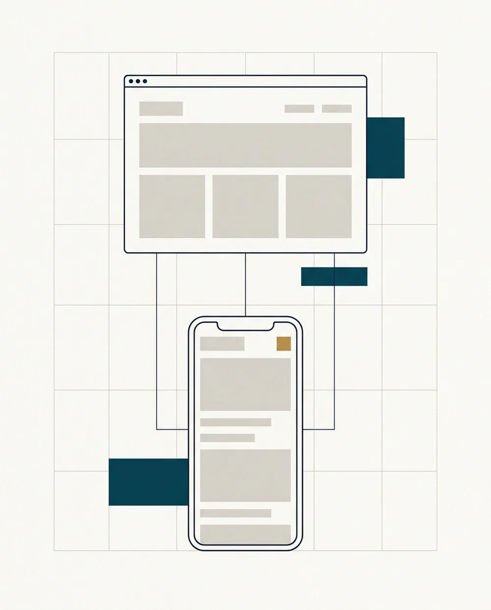

Parler clairement
Pas de jargon, pas de mots compliqués pour impressionner. Si une chose est techniquement nécessaire, je vous explique pourquoi, en français.
Web et Go, ce n'est pas un service client à numéro. C'est Gabriel Legentil, installé à Saint-André-des-Eaux, qui conçoit, rédige, met en ligne — et reste joignable après.

Qui je suis
Je crée des sites internet pour les professionnels et les associations de Dinan et des Côtes-d'Armor.
Pas de grande structure derrière Web et Go : quand vous m'écrivez, c'est moi qui vous réponds. Et c'est moi qui conçois votre site, le mets en ligne et vous accompagne.
J'ai créé Web et Go avec une idée simple : un site internet professionnel ne devrait être ni compliqué, ni hors de prix.
Trop souvent, créer ou refaire un site semble nécessiter un gros budget, des solutions complexes ou un vocabulaire technique difficile à comprendre.
Mon travail consiste justement à retirer cette barrière.
Vous me parlez de votre métier, de vos clients et de ce que vous voulez leur montrer. Je m'occupe de la technique.
Vous n'avez rien à installer, rien à paramétrer, rien à apprendre. Et si vous souhaitez être autonome, je vous montre simplement comment faire.
Ma façon de travailler
Ce ne sont pas des slogans : ce sont les règles auxquelles vous pouvez me tenir, du devis à la mise en ligne.
Pas de jargon, pas de mots compliqués pour impressionner. Si une chose est techniquement nécessaire, je vous explique pourquoi, en français.
Le devis est gratuit et détaillé ligne par ligne. Vous savez ce que vous payez, et ce que vous ne payez pas. Aucune facture ne tombe par surprise.
La mise en ligne n'est pas une porte qui se ferme. Une question six mois plus tard trouve encore une réponse — c'est le minimum quand on travaille près de chez ses clients.
Ce que vous n'aurez pas à faire
Un site internet demande une quinzaine de compétences différentes. Vous n'avez à en maîtriser aucune. Voici ce dont je m'occupe intégralement :
Zone d'intervention
J'interviens principalement autour de Dinan et Évran, dans les Côtes-d'Armor. Dans ce secteur, un rendez-vous en personne est possible : c'est souvent la meilleure façon de bien comprendre un projet.
Ailleurs en Bretagne ou en France, un projet se mène très bien à distance, par e-mail. Dans tous les cas, la réponse arrive sous 24 h, week-end compris, et le devis est gratuit.
Le secteur de Dinan et d'Évran
L'affichage de la carte est désactivé. Elle est fournie par OpenStreetMap et ne dépose aucun cookie.
La carte n'a pas pu être chargée. Vous pouvez consulter le secteur sur Google Maps avec le lien ci-contre.
Dinan, Côtes-d'Armor — le secteur où j'interviens.
Informations
Prendre contact
Écrivez-moi en quelques lignes. Si vous êtes dans le secteur de Dinan, on peut aussi se rencontrer.
Ou écrivez-moi directement : webetgo022@gmail.com
Cookies & données
Ce site ne dépose aucun cookie et n'utilise aucun traceur. Seule la carte du secteur (page À propos) fait appel à OpenStreetMap, qui reçoit votre adresse IP pour afficher les images. En savoir plus